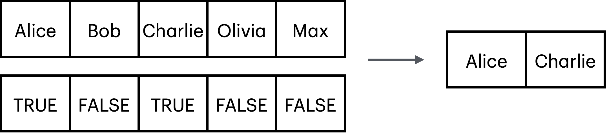

x <- 1:3
x
#> [1] 1 2 3Vectors
🧱 What Are Vectors
In R, a vector is the most basic and essential data structure. It’s simply a sequence of elements—like a list of numbers, characters, or logical values—all of the same type.
You can think of a vector like a row of boxes, where each box holds one value—and all boxes must hold the same kind of thing.

🆎 Types of Vectors
There are many data types. You can use function class() to see the type. Here are the main ones:
| Data Type | Code Example | Description |
|---|---|---|
| Numeric | x <- 3.14 |
A real (floating point) number. Used for quantities with fractions like weight, height, gpa score. Pretty much most common. |
| Integer | x <- 5L |
Similar to Numeric but used for discrete counts . Number of people, apples, floors in a building. |
| Character | x <- "hello" |
A text (string) value. Names, comment |
| Logical | x <- TRUE |
Also called Boolean value: TRUE or FALSE . Used when there are only two states for something, yin/yan, dead/alive, pass/fail, on/off, keep/discard. |
| Date | x <- as.Date("2020-02-01") |
date format. you can do math operations like this then as.Date("2020-01-02") - as.Date("2020-01-01") |
📦 Example
Lets create some vectors of different types and then combine them together into a data.frame .
🔤 Character vector:
name <- c("Alice", "Bob", "Charlie", "Olivia", "Max")
gender <- c("female", "male", "diverse", "female", "male")
class(name)
#> [1] "character"📊 Numeric vector:
height <- c(1.71, 1.82, 1.78, 1.68, 1.95)
weight <- c(56, 80, 75, 54, 95)
class(height)
#> [1] "numeric"✅ Logical vector:
is_married <- c(TRUE, FALSE, TRUE, FALSE, FALSE)
class(is_married)
#> [1] "logical"
# kleiner exkurs
# why logical vectors are useful
# the square brackets '[' are used to select elements of a vector
name[1]
#> [1] "Alice"
name[3]
#> [1] "Charlie"
# vorsicht
name[99]
#> [1] NA
# instead of numbers we can pass a logical vector with the same length
# which will keep elements TRUE
name[is_married]
#> [1] "Alice" "Charlie"
📅 Date vector:
# i will generate 5 random birthdays
# all are born in the year 2000
beginning <- as.Date("2000-01-01")
end <- as.Date("2000-12-31")
class(beginning)
#> [1] "Date"
# arithmetics is possible
end - beginning
#> Time difference of 365 days
# generate all dates in 2000
# and pick 5 at random
# (i am using the new pipe symbol '|>')
birthday <-
seq(from = beginning, to = end, by = 1) |>
sample(5)
birthday
#> [1] "2000-12-24" "2000-07-17" "2000-12-11" "2000-01-28" "2000-12-03"
# same thing without piping
# option 1. with an intermediate object for all 2000 dates
x <- seq(beginning, end, by = 1)
birthday <- sample(x, 5)
length(x)
#> [1] 366
head(x)
#> [1] "2000-01-01" "2000-01-02" "2000-01-03" "2000-01-04" "2000-01-05"
#> [6] "2000-01-06"
tail(x)
#> [1] "2000-12-26" "2000-12-27" "2000-12-28" "2000-12-29" "2000-12-30"
#> [6] "2000-12-31"
# option 2. nested, e.g. without intermediate x
birthday <- sample(seq(beginning, end, by = 1), 5)🧮 Data Frame
Data frame is table. Each column of the table is a vectors.
people <-
data.frame(name, birthday, height, weight, gender, is_married)
people
#> name birthday height weight gender is_married
#> 1 Alice 2000-05-26 1.71 56 female TRUE
#> 2 Bob 2000-06-05 1.82 80 male FALSE
#> 3 Charlie 2000-08-11 1.78 75 diverse TRUE
#> 4 Olivia 2000-11-29 1.68 54 female FALSE
#> 5 Max 2000-08-13 1.95 95 male FALSE
class(people)
#> [1] "data.frame"
# now we can do some data analysis using
library(tidyverse)
# like finding out who
people |>
filter(is_married)
#> name birthday height weight gender is_married
#> 1 Alice 2000-05-26 1.71 56 female TRUE
#> 2 Charlie 2000-08-11 1.78 75 diverse TRUE
# or who is
people |>
filter(gender == "male",
height > 1.90)
#> name birthday height weight gender is_married
#> 1 Max 2000-08-13 1.95 95 male FALSE
# more next time :)